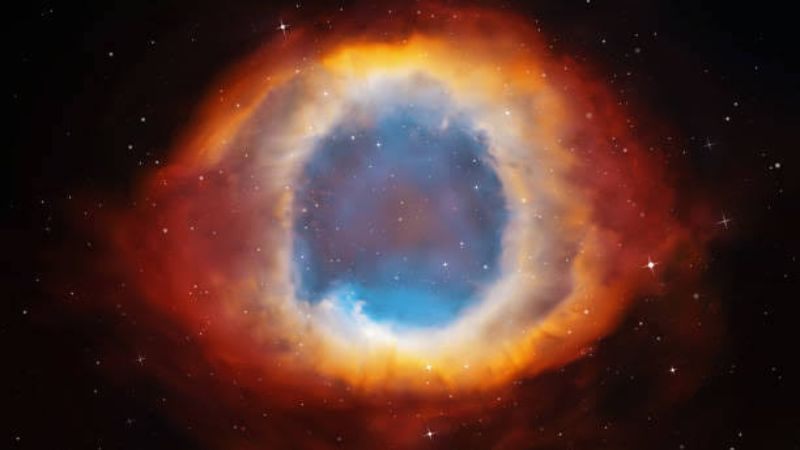
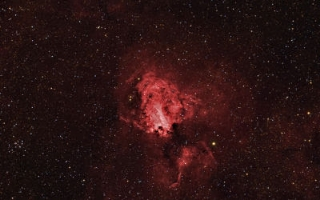
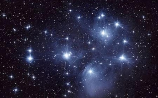
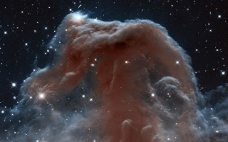
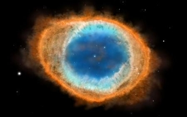
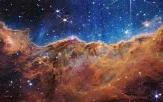
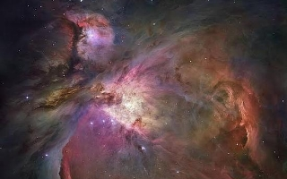
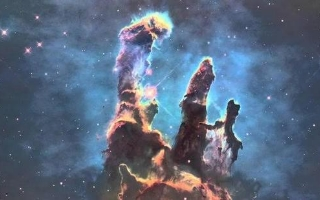

Nebulosas: Como são formadas as grandes nuvens do espaço?
Nebulosas, são grandes nuvens de gases e poeiras de estrelas, existem vários tipos de nebulosas que compõem o universo.
Nebulosa, um belo nome para berçário estelar, várias nebulosas podem ser encontradas facilmente no vasto universo, estas imensas nuvens de gás estão presentes no universo inteiro dando início a novas estrelas e planetas.
Como as nebulosas são formadas?
Nebulosa, são grandes nuvens de gases e poeiras de estrelas, essas nuvens de gases são formadas no final de um ciclo de vida de uma estrela, as estrelas explodem em uma supernova 🔗 expelindo toda matéria para todos os lados.
Uma nebulosa também pode surgir pela mera aglutinação de átomos pela ação da gravidade.
Quais são os tipos de nebulosas?
Existem vários tipos de nebulosas que compõem o universo, com características únicas e tamanhos diferentes. Os principais tipos são:
➢ Nebulosas de Emissão
➢ Nebulosas de Reflexão
➢ Nebulosas Escuras
➢ Nebulosas Planetárias
Nebulosas de Emissão
As nebulosas de emissão são nebulosas que rodeiam uma estrela quente e difundem a energia recebida em forma de radiação, com um espectro marcado por linhas brilhantes de hidrogênio. A coloração avermelhada é caracterizada por linhas alfa de hidrogênio.
Nebulosas de Reflexão
Nebulosas de reflexão são nuvens de poeiras e gases que refletem a luz de uma ou mais estrelas vizinhas. Estas nebulosas não são quentes o suficiente para provocar a ionização do gás da nebulosa, mas são brilhantes o suficiente para tornarem o gás visível.
Nebulosas Escuras
Uma nebulosa escura é uma grande nuvem molecular, com regiões pobres em estrelas onde a poeira do meio interestelar parece estar concentrada. Nebulosas escuras podem ser vistas quando elas obscurecem parte de uma nebulosa de reflexão ou uma emissão, ou se elas bloqueiam estrelas de fundo
Nebulosas Planetárias
As nebulosas planetárias são caracterizadas por um brilho de plasmas e gases ionizados. Nos últimos momentos da vida de uma estrela gigante vermelha, são expelidas quase toda a matéria só deixando um núcleo denso que esfria ao longo do tempo, esse núcleo é conhecido como anã branca ou estrela zumbi.
Quais são as principais Nebulosas?
Nebulosa de Eta Carinae
A nebulosa de Eta Carina é uma nebulosa brilhante que tem dentro de seus limites vários aglomerados abertos de estrelas relativos.
Nebulosa de Órion
A nebulosa de Órion é uma nebulosa difusa que se encontra entre 1500 e 1800 anos-luz do Sistema Solar, e situada a sul do Cinto de Órion. Foi descoberta por Nicolas-Claude Fabri de Peiresc em 1610.
Pilares da Criação
Os pilares da criação são aglomerados de poeira e gás com tamanho interestelar na nebulosa da Águia, situado a cerca de 6.500-7.000 anos-luz da Terra.
